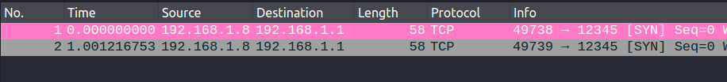
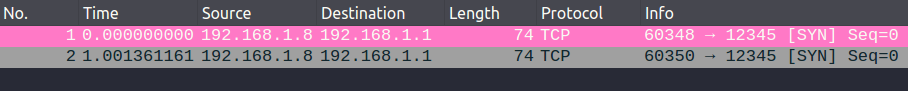

引言:
这是第一步，也是至关重要的一步，它是方向的决定，切记要小心。
正文内容
nmap 简介
如果把目的主机比喻成一个房子，IP地址就是它的住址，端口号就好比是一个个的大门。大门上有各自的门锁，这些门锁的复杂于否，取决于锁的设计与规范这便是网络协议于相应的算法。我们无法敲开一所不存在的房子，同样也无法攻破不存在的大门。因此要开门的第一步，便是先知道房子在哪里（IP 存活）,一眼可以看到的大门（端口号），以及被一些树枝杂物（防火墙/IPS/IDS）所掩盖的暗门。
- nmap有其专属的网站，其风格设计像是90年代的网站，首页标题的人眼睛，这么看都觉得有点违和，但这不妨碍它成为一个高价值的网站
- 目前
nmap的版本是7.9，它拥有这十分稳定的更新维护，虽然作为一个开源的工具，但其迭代与维护从来都没有懈怠过。如果想全面了解nmap，可能一本书都不够，并且需要不断地对知识进行更新，因为它也不断在更新。因此学习nmap，更为重要的是了解它主要的使用场景，了解原理（如：它如何判定主机的存活）更为之重要。更不要掉进了工具的黑洞中，在一个工具中无法自拔。其同类型的工具nessus,Masscan，Nikto等，也是十分优秀的存在。
什么是nmap
- nmap是一个多才多艺的(versatile)网络探测和端口扫描工具
- 网络
- 探测存活在网络中的主机
- 主机
- 探测主机的主机名称，使用的操作系统
- 端口
- 探测主机所使用的端口，以及所使用的服务
- 扩展
- 探测手段的多样化，如订制包的字段（如TCP的 syn, ack标识等）, 定制数据包类型（icmp, tcp, udp等）
- 可指定输出特定格式报告
- 探测性能的个性化设置
- 提供脚本(
Lua)引擎(NSE: (Nmap Scripting Engine)，为高级探测提供了丰富的延伸 - 对漏洞的扫描并提供相应的信息提示
- 网络
nmap 工作原理
如何使用nmap
- namp 最简单是以下的方式，如下所示，可以直接跟IP解析，这里将会使用大量的默认参数。这并不是问题，既然可以选为默认意味着它是最常见的，对付一般的情况已经足够了。可以网络环境是复杂的，我们的网络可以有多种不确定性和不同的网络防御手段，因此这种单纯的使用，很有可能让我们错失很多。正因为如此，我们需要进一步了解
nmap的工作方式。nmap <ip>
主机发现
1 | # 以下测试的基本信息 |
局域网内
默认检测方式，是通过向主机发送TCP报文到端口
80,443，探测主机端口是否开通相关服务，以此判断主机是否存活。如果判断主机存活，它会继续对主机常用的top-100端口进行扫描，因此该方式的主机探测效率极低
1
2
3
4
5
6
7
8
9
10
11
12
13
14
15
16
17
18
19
20
21
22
23
24
25
26
27
28
29
30
31
32
33
34
35
36
37
38
39
40# not exist in LAN
~ ❯ nmap 192.168.1.111 --packet-trace
Starting Nmap 7.01 ( https://nmap.org ) at 2022-01-01 10:19 HKT
CONN (0.0202s) TCP localhost > 192.168.1.111:80 => Operation now in progress
CONN (0.0202s) TCP localhost > 192.168.1.111:443 => Operation now in progress
CONN (2.0215s) TCP localhost > 192.168.1.111:443 => Operation now in progress
CONN (2.0216s) TCP localhost > 192.168.1.111:80 => Operation now in progress
Note: Host seems down. If it is really up, but blocking our ping probes, try -Pn
Nmap done: 1 IP address (0 hosts up) scanned in 3.02 seconds
~ took 3s❯
# exist in LAN
~ ❯ nmap 192.168.1.1 --packet-trace
Starting Nmap 7.01 ( https://nmap.org ) at 2022-01-01 10:22 HKT
CONN (0.0476s) TCP localhost > 192.168.1.111:80 => Operation now in progress
CONN (0.0476s) TCP localhost > 192.168.1.111:443 => Operation now in progress
CONN (2.0493s) TCP localhost > 192.168.1.111:443 => Operation now in progress
CONN (2.0494s) TCP localhost > 192.168.1.111:80 => Operation now in progress
Note: Host seems down. If it is really up, but blocking our ping probes, try -Pn
Nmap done: 1 IP address (0 hosts up) scanned in 3.05 seconds
Starting Nmap 7.01 ( https://nmap.org ) at 2022-01-01 10:22 HKT
CONN (0.0247s) TCP localhost > 192.168.1.1:80 => Operation now in progress
CONN (0.0247s) TCP localhost > 192.168.1.1:443 => Operation now in progress
CONN (0.0314s) TCP localhost > 192.168.1.1:80 => Connected
CONN (0.0375s) TCP localhost > 192.168.1.1:1720 => Operation now in progress
CONN (0.0375s) TCP localhost > 192.168.1.1:445 => Operation now in progress
...
~ took 6s ❯
# if you just want to detect host status, try with `-sn` and `-n`
~ ❯ nmap 192.168.1.1 -sn -n --packet-trace
Starting Nmap 7.01 ( https://nmap.org ) at 2022-01-01 10:41 HKT
CONN (0.0046s) TCP localhost > 192.168.1.1:80 => Operation now in progress
CONN (0.0047s) TCP localhost > 192.168.1.1:443 => Operation now in progress
CONN (0.0136s) TCP localhost > 192.168.1.1:80 => Connected
Nmap scan report for 192.168.1.1
Host is up (0.0093s latency).
Nmap done: 1 IP address (1 host up) scanned in 0.01 seconds
~ took less than 1s >在同一局域网内，通过ARP探测存活应该是首要的选择
在该过程中，主机会发送目的MAC为
FF:FF:FF:FF:FF:FF的ARP请求报文, 默认发送两个包注意ARP属于更为底层的数据包，因此需要更高的权限
sudo1
2
3
4
5
6
7
8
9
10
11
12
13
14
15
16
17# not exist in LAN
~ ❯ sudo nmap 192.168.1.111 --packet-trace
Starting Nmap 7.01 ( https://nmap.org ) at 2022-01-01 10:36 HKT
SENT (0.0590s) ARP who-has 192.168.1.111 tell 192.168.1.8
SENT (0.2593s) ARP who-has 192.168.1.111 tell 192.168.1.8
Note: Host seems down. If it is really up, but blocking our ping probes, try -Pn
Nmap done: 1 IP address (0 hosts up) scanned in 0.50 seconds
# exist in LAN (recommend use -sn(no port scan), -n(no DNS resolve))
~ ❯ sudo nmap 192.168.1.1 -sn -n --packet-trace
Starting Nmap 7.01 ( https://nmap.org ) at 2022-01-01 10:37 HKT
SENT (0.0477s) ARP who-has 192.168.1.1 tell 192.168.1.8
RCVD (0.0510s) ARP reply 192.168.1.1 is-at 48:5A:AB:CD:AB:CD
Nmap scan report for 192.168.1.1
Host is up (0.0034s latency).
MAC Address: 48:5A:AB:CD:AB:CD (Unknown)
Nmap done: 1 IP address (1 host up) scanned in 0.30 seconds如果局域网内有ARP的限制，这是甚少的情况
那么可以考虑使用 ping echo 作为主机存活的测试依据(-PE)
1
2
3
4
5
6
7
8
9
10
11
12
13
14
15
16
17
18
19
20# non root just could use TCP ping
~ ❯ nmap 192.168.1.1 -sn -n -PE --packet-trace
Warning: You are not root -- using TCP pingscan rather than ICMP
Starting Nmap 7.01 ( https://nmap.org ) at 2022-01-01 10:49 HKT
CONN (0.0015s) TCP localhost > 192.168.1.1:80 => Operation now in progress
CONN (0.0221s) TCP localhost > 192.168.1.1:80 => Connected
Nmap scan report for 192.168.1.1
Host is up (0.021s latency).
Nmap done: 1 IP address (1 host up) scanned in 0.02 seconds
# under root privilege
~ ❯ sudo nmap 192.168.1.1 -sn -n -PE --packet-trace
Starting Nmap 7.01 ( https://nmap.org ) at 2022-01-01 10:49 HKT
SENT (0.0487s) ARP who-has 192.168.1.1 tell 192.168.1.8
RCVD (0.0589s) ARP reply 192.168.1.1 is-at 48:5A:AB:CD:AB:CD
Nmap scan report for 192.168.1.1
Host is up (0.010s latency).
MAC Address: 48:5A:AB:CD:AB:CD (Unknown)
Nmap done: 1 IP address (1 host up) scanned in 0.29 seconds
外网主机
- 外网主机的检测，有很大的不同，主机会依次发送四种数据包来探测主机是否在线 (发送两轮，每次发送一个)
- ICMP echo request
- TCP SYN
- TCP ACK
- ICMP timestamp request
- 如若有一个返回包则证明目标主机是开启的，当然它还支持其他类型的探测:
SCTP INIT, cookie-echo, netmask - 鉴于只是希望获得主机存活，因此我们可以优化选项，使用
- –diable-arp-ping: 不进行arp 测试
- -sn: 不进行端口扫描
- -n: 不进行域名解析
1
2
3
4
5
6
7
8
9
10
11
12
13
14
15
16
17
18
19
20
21
22
23
24
25
26
27
28
29
30
31
32
33
34
35
36
37
38# non root privilege
~ ❯ nmap 31.234.26.62 --disable-arp-ping -sn -n --packet-trace
Starting Nmap 7.01 ( https://nmap.org ) at 2022-01-01 11:01 HKT
CONN (0.0022s) TCP localhost > 31.234.26.62:80 => Operation now in progress
CONN (0.0023s) TCP localhost > 31.234.26.62:443 => Operation now in progress
CONN (2.0040s) TCP localhost > 31.234.26.62:443 => Operation now in progress
CONN (2.0042s) TCP localhost > 31.234.26.62:80 => Operation now in progress
Note: Host seems down. If it is really up, but blocking our ping probes, try -Pn
Nmap done: 1 IP address (0 hosts up) scanned in 3.00 seconds
# under root privilege (not alive)
~ ❯ sudo nmap 31.234.26.62 --disable-arp-ping -sn -n --packet-trace
Starting Nmap 7.01 ( https://nmap.org ) at 2022-01-01 11:02 HKT
SENT (0.0557s) ICMP [192.168.1.8 > 31.234.26.62 Echo request (type=8/code=0) id=34333 seq=0] IP [ttl=48 id=39945 iplen=28 ]
SENT (0.0559s) TCP 192.168.1.8:37193 > 31.234.26.62:443 S ttl=40 id=38886 iplen=44 seq=1818477275 win=1024 <mss 1460>
SENT (0.0560s) TCP 192.168.1.8:37193 > 31.234.26.62:80 A ttl=47 id=37900 iplen=40 seq=0 win=1024
SENT (0.0561s) ICMP [192.168.1.8 > 31.234.26.62 Timestamp request (type=13/code=0) id=48531 seq=0 orig=0 recv=0 trans=0] IP [ttl=37 id=40254 iplen=40 ]
SENT (2.0583s) ICMP [192.168.1.8 > 31.234.26.62 Timestamp request (type=13/code=0) id=47396 seq=0 orig=0 recv=0 trans=0] IP [ttl=57 id=23396 iplen=40 ]
SENT (2.0586s) TCP 192.168.1.8:37194 > 31.234.26.62:80 A ttl=48 id=54151 iplen=40 seq=0 win=1024
SENT (2.0587s) TCP 192.168.1.8:37194 > 31.234.26.62:443 S ttl=37 id=46532 iplen=44 seq=1818411738 win=1024 <mss 1460>
SENT (2.0588s) ICMP [192.168.1.8 > 31.234.26.62 Echo request (type=8/code=0) id=50572 seq=0] IP [ttl=41 id=45715 iplen=28 ]
Note: Host seems down. If it is really up, but blocking our ping probes, try -Pn
Nmap done: 1 IP address (0 hosts up) scanned in 3.11 seconds
# under root privilege (alive)
~ ❯ sudo nmap 8.8.8.8 --disable-arp-ping -sn -n --packet-trace
Starting Nmap 7.01 ( https://nmap.org ) at 2022-01-01 11:02 HKT
SENT (0.0412s) ICMP [192.168.1.8 > 8.8.8.8 Echo request (type=8/code=0) id=16451 seq=0] IP [ttl=53 id=50491 iplen=28 ]
SENT (0.0413s) TCP 192.168.1.8:52656 > 8.8.8.8:443 S ttl=50 id=27813 iplen=44 seq=1617699854 win=1024 <mss 1460>
SENT (0.0414s) TCP 192.168.1.8:52656 > 8.8.8.8:80 A ttl=45 id=21604 iplen=40 seq=0 win=1024
SENT (0.0414s) ICMP [192.168.1.8 > 8.8.8.8 Timestamp request (type=13/code=0) id=23460 seq=0 orig=0 recv=0 trans=0] IP [ttl=46 id=50823 iplen=40 ]
RCVD (0.1114s) ICMP [8.8.8.8 > 192.168.1.8 Echo reply (type=0/code=0) id=16451 seq=0] IP [ttl=116 id=0 iplen=28 ]
Nmap scan report for 8.8.8.8
Host is up (0.070s latency).
Nmap done: 1 IP address (1 host up) scanned in 0.28 seconds
- 外网主机的检测，有很大的不同，主机会依次发送四种数据包来探测主机是否在线 (发送两轮，每次发送一个)
端口扫描
基本信息
1
2
3
4
5
6
7
8
9# 以下测试的基本信息
192.168.1.0/24 ==> 局域网
192.168.1.1 ==> 网关
* 21 open
* 80 open
192.168.1.8 ==> 本地主机
* 443 open
192.168.1.xxx ==> 不存在的主机namp对于端口的扫描，是通过端口的常用情况进行扫描的而不是按端口编号，nmap默认扫描最常用的1000个端口 (-F 扫描最常用100个)
端口的扫描是通过发送TCP/UDP数据包于目标主机的著名端口尝试进行连接，以此获得目标主机的响应回复，进而判断主机端口的开启与否
扫描分类
TCP SYN 扫描 (-sS)
原理: 默认的端口扫描方式，通过发送SYN报文至目标端口，如若收到SYN/ACK回复，则代表端口是开放状态，如果收到
RST则表示关闭场景: 扫描端口的存活情况
优/缺点:
- 优点: 对比
TCP connect扫描,该扫描不需要三次握手，速度更快，也较为隐蔽 - 缺点: 需要root权限
- 优点: 对比
图解
- 补充: 收到
RST的TCP包出现情况- RST: reset: 用于复位因某种原因引起出现的错误连接，也用来拒绝非法数据和请求
- connect 一个不存在的端口
- 向一个已关闭的连接发送数据
- 向一个已经崩溃的对端发送数据（连接之前已经被建立）
- close(sockfd)时，直接丢弃接收缓冲区未读取数据，发送给对方一个RST
- 补充: 收到
测试
- -sS: TCP connect测试 (可不写，缺省就是它)
- -Pn: 默认主机存活（不进行主机存活测试）
- -n: 不对域名进行解释
- –disable-arp-ping: 不进行arp测试
1
2
3
4
5
6
7
8
9
10
11# TCP syn success
~ ❯ sudo nmap -sS 192.168.1.1 -p80 -Pn -n --disable-arp-ping --packet-trace
Starting Nmap 7.01 ( https://nmap.org ) at 2022-01-01 14:54 HKT
SENT (0.0999s) TCP 192.168.1.8:47604 > 192.168.1.1:80 S ttl=52 id=4666 iplen=44 seq=4122108757 win=1024 <mss 1460>
RCVD (0.1045s) TCP 192.168.1.1:80 > 192.168.1.8:47604 SA ttl=64 id=0 iplen=44 seq=3362087325 win=29200 <mss 1460>
Nmap scan report for 192.168.1.1
Host is up (0.0047s latency).
PORT STATE SERVICE
80/tcp open http
MAC Address: 48:5A:AB:CD:AB:CD (Unknown)
Nmap done: 1 IP address (1 host up) scanned in 0.37 seconds1
2
3
4
5
6
7
8
9
10# TCP SYN fail withou response
~ ❯ sudo nmap -sS 192.168.1.1 -p12345 -Pn -n --disable-arp-ping --packet-trace
Starting Nmap 7.01 ( https://nmap.org ) at 2022-01-01 15:06 HKT
SENT (0.0848s) TCP 192.168.1.8:44822 > 192.168.1.1:12345 S ttl=55 id=57037 iplen=44 seq=1085289323 win=1024 <mss 1460>
SENT (1.0862s) TCP 192.168.1.8:44823 > 192.168.1.1:12345 S ttl=38 id=55583 iplen=44 seq=1085354858 win=1024 <mss 1460>
Nmap scan report for 192.168.1.1
Host is up.
PORT STATE SERVICE
12345/tcp filtered netbus
Nmap done: 1 IP address (1 host up) scanned in 2.12 seconds
- 上述测试，似乎和图解有所不符，其实不然。我们可以发现这里状态为
filtered，而非open/closed - 一般情况下，这会有几种原因导致主机端口显示
filtered状态- 数据包发送过去了，没有回包，被丢弃了
droped(我们这里的情况) - 数据包发送过去了被拒绝了
rejected(图解所示情况)
- 数据包发送过去了，没有回包，被丢弃了
- 注意一点!
filtered的状态表明无法知晓主机端口暂时无法得知是否启用，可能是暗门（防火墙/IPS/IDS保护）,也可能是死胡同
1
2
3
4
5
6
7
8
9
10
11# TCP syn fail with RST reply
~ ❯ sudo nmap -sS 192.168.1.8 -p12345 -Pn -n --disable-arp-ping --packet-trace
Starting Nmap 7.01 ( https://nmap.org ) at 2022-01-01 15:09 HKT
SENT (0.0712s) TCP 192.168.1.8:61757 > 192.168.1.8:12345 S ttl=42 id=7212 iplen=44 seq=3997263221 win=1024 <mss 1460>
RCVD (0.0711s) TCP 192.168.1.8:61757 > 192.168.1.8:12345 S ttl=42 id=7212 iplen=44 seq=3997263221 win=1024 <mss 1460>
RCVD (0.0712s) TCP 192.168.1.8:12345 > 192.168.1.8:61757 RA ttl=64 id=0 iplen=40 seq=0 win=0
Nmap scan report for 192.168.1.8
Host is up (0.000049s latency).
PORT STATE SERVICE
12345/tcp closed netbus
Nmap done: 1 IP address (1 host up) scanned in 0.31 seconds
TCP connect 扫描 (-sT)
原理: 通过网路的API connect向目标主机端口发送TCP连接，如果端口在监听状态，则会成功收到返回包，判断端口可达
场景: 扫描端口的存活情况
优/缺点:
- 优点: 无需使用root权限
- 缺点: 需要建立三次握手，严重影响效率,目标主机的日志将记录大批连接请求错误信息,容易被检测
图解
测试
- -sT: TCP connect测试
- -Pn: 默认主机存活（不进行主机存活测试）
- -n: 不对域名进行解释
- –disable-arp-ping: 不进行arp测试
1
2
3
4
5
6
7
8
9
10# TCP connect success
~ ❯ nmap -sT 192.168.1.1 -p80 -Pn -n --disable-arp-ping --packet-trace
Starting Nmap 7.01 ( https://nmap.org ) at 2022-01-01 12:33 HKT
CONN (0.0466s) TCP localhost > 192.168.1.1:80 => Operation now in progress
CONN (0.0495s) TCP localhost > 192.168.1.1:80 => Connected
Nmap scan report for 192.168.1.1
Host is up (0.0030s latency).
PORT STATE SERVICE
80/tcp open http
Nmap done: 1 IP address (1 host up) scanned in 0.04 seconds1
2
3
4
5
6
7
8
9
10# TCP connect fail without response
~ ❯ nmap -sT 192.168.1.1 -p12345 -Pn -n --disable-arp-ping --packet-trace
Starting Nmap 7.01 ( https://nmap.org ) at 2022-01-01 15:04 HKT
CONN (0.0447s) TCP localhost > 192.168.1.1:12345 => Operation now in progress
CONN (1.0461s) TCP localhost > 192.168.1.1:12345 => Operation now in progress
Nmap scan report for 192.168.1.1
Host is up.
PORT STATE SERVICE
12345/tcp filtered netbus
Nmap done: 1 IP address (1 host up) scanned in 2.05 seconds
1
2
3
4
5
6
7
8
9
10# TCP connect fail with RST reply
~ ❯ nmap -sT 192.168.1.8 -p12345 --disable-arp-ping -n -Pn --packet-trace
Starting Nmap 7.01 ( https://nmap.org ) at 2022-01-01 13:04 HKT
CONN (0.0421s) TCP localhost > 192.168.1.8:12345 => Operation now in progress
CONN (0.0421s) TCP localhost > 192.168.1.8:12345 => Connection refused
Nmap scan report for 192.168.1.8
Host is up (0.000076s latency).
PORT STATE SERVICE
12345/tcp closed netbus
Nmap done: 1 IP address (1 host up) scanned in 0.04 seconds
秘密扫描
TCP ACK 扫描 (-sA)
- 原理: 对于TCP的
ACK数据包，无论目标主机端口是否打开，都会返回一个RST数据包。这是因为防火墙无法判断对于ACK的连接的建立是来自外部网络，还是内部网络的。该方法主要用于判断端口是否被防火墙屏蔽过滤，如果被屏蔽则无法收到RST包，如果没有被屏蔽则可以收到。 - 说明:
- 最正常的场景，端口开启 （open）
- 不正常或值得怀疑的场景，端口关闭（closed）或被屏蔽（filtered）
closed是由于SYN扫描时，目标主机发送RST==> 也可能是防御设备故意为止 ==> 较大概率不是暗门filtered是由于发送的SYN数据包没有被应答 ==> 可能是防御设备对数据包丢弃 ==> 可能是暗门,也可能是全局设置对不启动端口一概拒绝回包导致
- 因此看到
filtered是暗门还是墙需要再做分析
- 场景: 配合
TCP SYN扫描，判断目标主机防火墙情况，一般不用于独立扫描端口。 - 优/缺点:
- 优点: 由于不建立三次握手，因此不会被审计记录，是一种隐蔽的端口扫描手段
- 缺点: 结果的可靠性较低，精度较低,需要自己构建非常规数据包，所以需要root权限
- 图解
- 测试
1
2
3
4
5
6
7
8
9
10
11
12
13
14
15
16
17
18
19
20
21
22
23
24
25
26
27
28
29
30
31
32
33# detect port status via TCP-ACK
# 21/ftp response with RST packet
# 80/http without response
~ ❯ sudo nmap -sA 192.168.1.1 -p21,80 -n --disable-arp-ping -Pn --packet-trace
Starting Nmap 7.01 ( https://nmap.org ) at 2022-01-01 16:08 HKT
SENT (0.0673s) TCP 192.168.1.8:58315 > 192.168.1.1:21 A ttl=46 id=13123 iplen=40 seq=0 win=1024
SENT (0.0674s) TCP 192.168.1.8:58315 > 192.168.1.1:80 A ttl=42 id=7442 iplen=40 seq=0 win=1024
RCVD (0.0719s) TCP 192.168.1.1:21 > 192.168.1.8:58315 R ttl=64 id=29658 iplen=40 seq=1283672207 win=0
SENT (1.2575s) TCP 192.168.1.8:58316 > 192.168.1.1:80 A ttl=58 id=44888 iplen=40 seq=0 win=1024
Nmap scan report for 192.168.1.1
Host is up (0.0046s latency).
PORT STATE SERVICE
21/tcp unfiltered ftp
80/tcp filtered http
MAC Address: 48:5A:AB:CD:AB:CD(Unknown)
Nmap done: 1 IP address (1 host up) scanned in 1.41 seconds
# detect port status via TCP-SYN
# 21/ftp response with SYN/ACK
# 80/http response with SYN/ACK
~ ❯ sudo nmap -sS 192.168.1.1 -p21,80 -n --disable-arp-ping -Pn --packet-trace
Starting Nmap 7.01 ( https://nmap.org ) at 2022-01-01 16:08 HKT
SENT (0.0758s) TCP 192.168.1.8:53884 > 192.168.1.1:80 S ttl=48 id=45707 iplen=44 seq=2482515593 win=1024 <mss 1460>
SENT (0.0758s) TCP 192.168.1.8:53884 > 192.168.1.1:21 S ttl=39 id=56209 iplen=44 seq=2482515593 win=1024 <mss 1460>
RCVD (0.0776s) TCP 192.168.1.1:80 > 192.168.1.8:53884 SA ttl=64 id=0 iplen=44 seq=1011603273 win=29200 <mss 1460>
RCVD (0.0789s) TCP 192.168.1.1:21 > 192.168.1.8:53884 SA ttl=64 id=0 iplen=44 seq=912965821 win=29200 <mss 1460>
Nmap scan report for 192.168.1.1
Host is up (0.0021s latency).
PORT STATE SERVICE
21/tcp open ftp
80/tcp open http
MAC Address: 48:5A:AB:CD:AB:CD(Unknown)
Nmap done: 1 IP address (1 host up) scanned in 0.34 seconds
- 原理: 对于TCP的
TCP FIN 扫描 (-sF)
- 原理: 通过向目标主机发送
FIN标识的数据包，如果端口开启，无论防火墙是否过滤请求包，都不会回应任何信息，如果端口关闭，则会返回RST报文 - 场景: 同样作为
ACK扫描获得过滤端口后的一种补充手段 - 优/缺点:
- 优点: 由于不建立完整的TCP连接，减少了目标主机记录的可能性
- 缺点: 结果的可靠性较低，精度较低,需要自己构建非常规数据包，所以需要root权限
- 图解
- 测试
1
2
3
4
5
6
7
8
9
10
11
12
13
14
15~ ❯ sudo nmap -sF 192.168.1.1 -p21,80,81 -n --disable-arp-ping -Pn --packet-trace
Starting Nmap 7.01 ( https://nmap.org ) at 2022-01-01 16:31 HKT
SENT (0.0568s) TCP 192.168.1.8:39321 > 192.168.1.1:21 F ttl=39 id=38152 iplen=40 seq=3873576394 win=1024
SENT (0.0568s) TCP 192.168.1.8:39321 > 192.168.1.1:80 F ttl=38 id=43385 iplen=40 seq=3873576394 win=1024
SENT (0.0568s) TCP 192.168.1.8:39321 > 192.168.1.1:81 F ttl=53 id=461 iplen=40 seq=3873576394 win=1024
SENT (2.0584s) TCP 192.168.1.8:39322 > 192.168.1.1:81 F ttl=48 id=15552 iplen=40 seq=3873641931 win=1024
SENT (2.0585s) TCP 192.168.1.8:39322 > 192.168.1.1:80 F ttl=56 id=57396 iplen=40 seq=3873641931 win=1024
SENT (2.0586s) TCP 192.168.1.8:39322 > 192.168.1.1:21 F ttl=45 id=957 iplen=40 seq=3873641931 win=1024
Nmap scan report for 192.168.1.1
Host is up.
PORT STATE SERVICE
21/tcp open|filtered ftp
80/tcp open|filtered http
81/tcp open|filtered hosts2-ns
Nmap done: 1 IP address (1 host up) scanned in 3.12 seconds- 原理: 通过向目标主机发送
XMAS 扫描 (-sX)
- 原理: 通过向目标主机发送
PSH,FIN,URG标识且值为1的数据包，其中URG表示紧急数据，应立即处理，PSH表示强制将数据压入缓存区，FIN提示结束TCP会话。如果端口开放，不会有任何的响应，如果目标主机返回一个RST响应，表明端口处于关闭状态，如果返回一个ICMP数据包，表明数据包被过滤。 - 场景: 同样作为
ACK扫描获得过滤端口后的一种补充手段 - 优/缺点:
- 优点: 由于不建立完整的TCP连接，减少了目标主机记录的可能性
- 缺点: 结果的可靠性较低，精度较低,需要自己构建非常规数据包，所以需要root权限
- 图解
- 测试
1
2
3
4
5
6
7
8
9
10
11
12
13
14
15
16# scan 443(open) no reply, 21 (closed) recevie RSA
~ ❯ sudo nmap -sX 192.168.1.8 -p21,443 -n --disable-arp-ping -Pn --packet-trace
Starting Nmap 7.01 ( https://nmap.org ) at 2022-01-01 17:01 HKT
SENT (0.0667s) TCP 192.168.1.8:39516 > 192.168.1.8:21 FPU ttl=47 id=47136 iplen=40 seq=31448153 win=1024
SENT (0.0667s) TCP 192.168.1.8:39516 > 192.168.1.8:443 FPU ttl=49 id=32612 iplen=40 seq=31448153 win=1024
RCVD (0.0667s) TCP 192.168.1.8:39516 > 192.168.1.8:21 FPU ttl=47 id=47136 iplen=40 seq=31448153 win=1024
RCVD (0.0667s) TCP 192.168.1.8:21 > 192.168.1.8:39516 RA ttl=64 id=0 iplen=40 seq=0 win=0
RCVD (0.0667s) TCP 192.168.1.8:39516 > 192.168.1.8:443 FPU ttl=49 id=32612 iplen=40 seq=31448153 win=1024
SENT (1.2582s) TCP 192.168.1.8:39517 > 192.168.1.8:443 FPU ttl=40 id=12770 iplen=40 seq=31382616 win=1024
RCVD (1.2582s) TCP 192.168.1.8:39517 > 192.168.1.8:443 FPU ttl=40 id=12770 iplen=40 seq=31382616 win=1024
Nmap scan report for 192.168.1.8
Host is up (0.000035s latency).
PORT STATE SERVICE
21/tcp closed ftp
443/tcp open|filtered https
Nmap done: 1 IP address (1 host up) scanned in 1.39 seconds
1
2
3
4
5
6
7
8
9
10
11
12
13
14
15
16# scan 21(open), 80(open), 81(closed) no response
~ ❯ sudo nmap -sX 192.168.1.1 -p21,80,81 -n --disable-arp-ping -Pn --packet-trace
Starting Nmap 7.01 ( https://nmap.org ) at 2022-01-01 17:10 HKT
SENT (0.0653s) TCP 192.168.1.8:45847 > 192.168.1.1:80 FPU ttl=48 id=58896 iplen=40 seq=2912625709 win=1024
SENT (0.0653s) TCP 192.168.1.8:45847 > 192.168.1.1:21 FPU ttl=50 id=35999 iplen=40 seq=2912625709 win=1024
SENT (0.0654s) TCP 192.168.1.8:45847 > 192.168.1.1:81 FPU ttl=49 id=56865 iplen=40 seq=2912625709 win=1024
SENT (2.0678s) TCP 192.168.1.8:45848 > 192.168.1.1:81 FPU ttl=55 id=38027 iplen=40 seq=2912560172 win=1024
SENT (2.0679s) TCP 192.168.1.8:45848 > 192.168.1.1:21 FPU ttl=57 id=50047 iplen=40 seq=2912560172 win=1024
SENT (2.0680s) TCP 192.168.1.8:45848 > 192.168.1.1:80 FPU ttl=50 id=3027 iplen=40 seq=2912560172 win=1024
Nmap scan report for 192.168.1.1
Host is up.
PORT STATE SERVICE
21/tcp open|filtered ftp
80/tcp open|filtered http
81/tcp open|filtered hosts2-ns
Nmap done: 1 IP address (1 host up) scanned in 3.10 seconds- 原理: 通过向目标主机发送
NULL 扫描 (-sN)
- 原理: 该方法又被称为反向扫描。正常的数据包至少要有一个标志位（RFC793）,该扫描则不包含任何标志位。在端口关闭的情况下，若收到一个没有任何标志位的数据包，主机将舍弃该分段，并发送一个
RST数据包，如果端口开启则不会响应任何数据包。 - 场景: 由于
windows不遵守RFC793，，且只要收到没有设置任何标志位的数据包时，不管端口是处于开放还是关闭都响应一个RST 数据包，因此该方法可以用于扫描判断主机是windows还是linux。 - 优/缺点:
- 优点: 由于不建立完整的TCP连接，减少了目标主机记录的可能性
- 缺点: 结果的可靠性较低，精度较低,需要自己构建非常规数据包，所以需要root权限
- 图解
- 测试
1
2
3
4
5
6
7
8
9
10
11
12
13
14
15
16# scan 443(open) no reply, 21 (closed)
~ ❯ sudo nmap -sN 192.168.1.8 -p21,443 -n --disable-arp-ping -Pn --packet-trace
Starting Nmap 7.01 ( https://nmap.org ) at 2022-01-01 17:35 HKT
SENT (0.0475s) TCP 192.168.1.8:51354 > 192.168.1.8:443 ttl=51 id=56194 iplen=40 seq=3680893313 win=1024
SENT (0.0475s) TCP 192.168.1.8:51354 > 192.168.1.8:21 ttl=45 id=39654 iplen=40 seq=3680893313 win=1024
RCVD (0.0475s) TCP 192.168.1.8:51354 > 192.168.1.8:443 ttl=51 id=56194 iplen=40 seq=3680893313 win=1024
RCVD (0.0475s) TCP 192.168.1.8:51354 > 192.168.1.8:21 ttl=45 id=39654 iplen=40 seq=3680893313 win=1024
RCVD (0.0475s) TCP 192.168.1.8:21 > 192.168.1.8:51354 RA ttl=64 id=0 iplen=40 seq=0 win=0
SENT (1.2387s) TCP 192.168.1.8:51355 > 192.168.1.8:443 ttl=53 id=1462 iplen=40 seq=3680827776 win=1024
RCVD (1.2387s) TCP 192.168.1.8:51355 > 192.168.1.8:443 ttl=53 id=1462 iplen=40 seq=3680827776 win=1024
Nmap scan report for 192.168.1.8
Host is up (0.000013s latency).
PORT STATE SERVICE
21/tcp closed ftp
443/tcp open|filtered https
Nmap done: 1 IP address (1 host up) scanned in 1.38 seconds1
2
3
4
5
6
7
8
9
10
11
12
13
14
15
16# scan 21(open), 80(open), 81(closed)
~ ❯ sudo nmap -sN 192.168.1.1 -p21,80,81 -n --disable-arp-ping -Pn --packet-trace
Starting Nmap 7.01 ( https://nmap.org ) at 2022-01-01 17:36 HKT
SENT (0.1021s) TCP 192.168.1.8:49193 > 192.168.1.1:21 ttl=52 id=7330 iplen=40 seq=766912146 win=1024
SENT (0.1022s) TCP 192.168.1.8:49193 > 192.168.1.1:80 ttl=41 id=48147 iplen=40 seq=766912146 win=1024
SENT (0.1022s) TCP 192.168.1.8:49193 > 192.168.1.1:81 ttl=39 id=28638 iplen=40 seq=766912146 win=1024
SENT (2.1047s) TCP 192.168.1.8:49194 > 192.168.1.1:81 ttl=38 id=58446 iplen=40 seq=766977683 win=1024
SENT (2.1049s) TCP 192.168.1.8:49194 > 192.168.1.1:80 ttl=48 id=12120 iplen=40 seq=766977683 win=1024
SENT (2.1050s) TCP 192.168.1.8:49194 > 192.168.1.1:21 ttl=46 id=36563 iplen=40 seq=766977683 win=1024
Nmap scan report for 192.168.1.1
Host is up.
PORT STATE SERVICE
21/tcp open|filtered ftp
80/tcp open|filtered http
81/tcp open|filtered hosts2-ns
Nmap done: 1 IP address (1 host up) scanned in 3.15 seconds- 原理: 该方法又被称为反向扫描。正常的数据包至少要有一个标志位（RFC793）,该扫描则不包含任何标志位。在端口关闭的情况下，若收到一个没有任何标志位的数据包，主机将舍弃该分段，并发送一个
其他扫描
UDP 扫描 (-sU)
- 原理: UDP 并非是面向连接的，因此不能像TCP端口扫描，其依赖于建立连接的过程，使得UDP端口扫描可靠性不高
- 利用ICMP端口不可达报文进行扫描: 当UDP端口收到一个UDP数据报时，如果它是关闭状态，将会返回一个
ICMP port unreachable, 如果开放则不返回任何信息 - 利用UDP
recvfrom()和write()扫描: 无需管理员权限，该方法调用recvfrom和write接口，对于关闭的状态端口，第二次调用write会得到错误信息，而调用recvfrom，如果未收到ICMP返回错误代码13收到了ICMP返回错误代码111，可以通过这些区别判断端口状态。 - 如果返回 ICMP 端口不可达错误（类型 3，代码 3），则端口关闭。 其他 ICMP 不可达错误（类型 3，代码 0、1、2、9、10 或 13）将端口标记为已过滤。 有时，服务会以 UDP 数据包响应，证明它是开放的。 如果重传后没有收到响应，则该端口被归类为开放|过滤。 这意味着端口可能是开放的，或者数据包过滤器可能会阻止通信。
- 利用ICMP端口不可达报文进行扫描: 当UDP端口收到一个UDP数据报时，如果它是关闭状态，将会返回一个
- 场景: 使用UDP服务的业务，例如DNS
- 图解:
- 原理: UDP 并非是面向连接的，因此不能像TCP端口扫描，其依赖于建立连接的过程，使得UDP端口扫描可靠性不高
IP 头信息dump扫描
- 原理: 也被称为IDLE扫描，在扫描主机时应用了第三方僵尸计算机进行扫描。由僵尸计算机向目标主机发送SYN包，目标主机端口开放时回复
SYN/ACK，关闭时返回RST。僵尸主机对SYN/ACK回应RST，对于RST不做回应。
- 原理: 也被称为IDLE扫描，在扫描主机时应用了第三方僵尸计算机进行扫描。由僵尸计算机向目标主机发送SYN包，目标主机端口开放时回复
版本侦测
- 原理: namp 对于软件的检测，是基于其庞大的应用签名和数百种应用协议的。但是其识别的准确性也不是特别高，如果其无法识别将会尝试将应用指纹打印出来，让用户自行判断
- 对应过程
- 首先检查开启状态下的端口是否在排除端口列表内。如果在则将端口剔除。
- 若是TCP 端口，尝试TCP 连接。在等待连接的时间里，会接受到目标机发送的“WelcomeBanner”信息。Nmap将接收到的Bnner与nmap -service -probes中NULL prode的签名进行对比。查找对应应用程序的名字和版本信息。
- 若无法通过Banner确定应用程序版本，那么Nmap再次尝试发送其他的探测包将probe得到回复包与数据库中的签名进行对比。如果反复探测都无法得出具体应用，那么打印出应用返回报文，让用户自行进一步判定。
- 若是UDP 端口，那么直接使用nmap -service -probes中探测包进行匹配，根据匹配结果分析应用程序版本。
- 如果探测到的应用程序时SSL，那么调用openSSL进一步侦查运行在SSL之上的具体的应用程序。如果探测到的应用程序时SunRPC，那么调用brute -force RPC grinder 进一步探测具体服务。
- 如果探测到的应用程序时SunRPC，那么调用brute -force RPC grinder 进一步探测具体服务。
- 例子: 检查ftp服务版本
1
2
3
4
5
6
7
8
9
10
11
12
13
14
15
16
17
18
19
20~ ❯ sudo nmap -p21 192.168.1.1 -sV --disable-arp-ping -n -Pn --packet-trace
Starting Nmap 7.01 ( https://nmap.org ) at 2022-01-01 18:27 HKT
SENT (0.2761s) TCP 192.168.1.8:53761 > 192.168.1.1:21 S ttl=38 id=1602 iplen=44 seq=1630633811 win=1024 <mss 1460>
RCVD (0.2781s) TCP 192.168.1.1:21 > 192.168.1.8:53761 SA ttl=64 id=0 iplen=44 seq=2086576656 win=29200 <mss 1460>
NSOCK INFO [0.5930s] nsock_iod_new2(): nsock_iod_new (IOD #1)
NSOCK INFO [0.5930s] nsock_connect_tcp(): TCP connection requested to 192.168.1.1:21 (IOD #1) EID 8
NSOCK INFO [0.6000s] nsock_trace_handler_callback(): Callback: CONNECT SUCCESS for EID 8 [192.168.1.1:21]
Service scan sending probe NULL to 192.168.1.1:21 (tcp)
NSOCK INFO [0.6000s] nsock_read(): Read request from IOD #1 [192.168.1.1:21] (timeout: 6000ms) EID 18
NSOCK INFO [0.6090s] nsock_trace_handler_callback(): Callback: READ SUCCESS for EID 18 [192.168.1.1:21] (20 bytes): 220 (vsFTPd 3.0.4)..
Service scan match (Probe NULL matched with NULL line 685): 192.168.1.1:21 is ftp. Version: |vsftpd|3.0.4||
NSOCK INFO [0.6090s] nsock_iod_delete(): nsock_iod_delete (IOD #1)
Nmap scan report for 192.168.1.1
Host is up (0.0021s latency).
PORT STATE SERVICE VERSION
21/tcp open ftp vsftpd 3.0.4
MAC Address: 48:5A:AB:CD:AB:CD(Unknown)
Service Info: OS: Unix
Service detection performed. Please report any incorrect results at https://nmap.org/submit/ .
Nmap done: 1 IP address (1 host up) scanned in 0.70 seconds
操作系统侦测
- 原理: Nmap使用TCP/IP协议栈指纹来识别不同的操作系统和设备。在RFC规范中，有些地方对TCP/IP的实现并没有强制规定，由此不同的TCP/IP方案中可能都有自己的特定方式。Nmap主要是根据这些细节上的差异来判断操作系统的类型的。
- 具体内容:
- Nmap内部包含了2600多已知系统的指纹特征（在文件nmap-os-db文件中）, 可以识别通用PC系统、路由器、交换机等设备类型。将此指纹数据库作为进行指纹对比的样本库
- 分别挑选一个开启和关闭状态下的端口，向其发送经过精心设计的TCP / UDP / ICMP数据包，根据返回的数据包生成一份系统指纹。
- 将探测生成的指纹与 nmap -os -db中指纹进行对比，查找匹配的系统。如果无法匹配，以概率形式列举出可能的系统。
防火墙/IDS规避
原理: 规避防火墙的监察，关键点在于桥装打扮，骗过门卫
伪装分类
分片: 将可疑的探测包进行分片处理（例如将TCP包拆分成多个IP包发送过去），某些简单的防火墙为了加快处理速度可能不会进行重组检查
IP诱骗: 在进行扫描时（其他主机需要在线，否则目标主机将回复大量数据包到不存在的主机，从而实质构成了拒绝服务攻击），将真实IP地址和其他主机的IP地址混合使用，以此让目标主机的防火墙或IDS追踪检查大量的不同IP地址的数据包，降低其追查到自身的概率。
IP伪装: IP伪装即将自己发送的数据包中的IP地址伪装成其他主机的地址，从而目标机认为是其他主机在与之通信。如果希望接收到目标主机的回复包，那么伪装的IP需要位于统一局域网内。另外，如果既希望隐蔽自己的IP地址，又希望收到目标主机的回复包，那么可以尝试使用idle scan或匿名代理（如TOR）等网络技术。
指定源端口: 某些目标主机只允许来自特定端口的数据包通过防火墙。例如FTP服务器配置为：允许源端口为21号的TCP包通过防火墙与FTP服务端通信，但是源端口为其他端口的数据包被屏蔽。所以，在此类情况下，可以指定Nmap将发送的数据包的源端口都设置特定的端口。
- 例如在HTB中有相关问题，某些特定的服务可能只允许特定的端口和它进行通信：
1
2
3
4
5
6
7
8
9$ sudo nmap 10.129.2.28 -p50000 -sS -Pn -n --disable-arp-ping --packet-trace --source-port 53
SENT (0.0482s) TCP 10.10.14.2:53 > 10.129.2.28:50000 S ttl=58 id=27470 iplen=44 seq=4003923435 win=1024 <mss 1460>
RCVD (0.0608s) TCP 10.129.2.28:50000 > 10.10.14.2:53 SA ttl=64 id=0 iplen=44 seq=540635485 win=64240 <mss 1460>
Nmap scan report for 10.129.2.28
Host is up (0.013s latency).
PORT STATE SERVICE
50000/tcp open ibm-db2
MAC Address: DE:AD:00:00:BE:EF (Intel Corporate)
Nmap done: 1 IP address (1 host up) scanned in 0.08 seconds
- 例如在HTB中有相关问题，某些特定的服务可能只允许特定的端口和它进行通信：
扫描延时: 某些防火墙针对发送过于频繁的数据包会进行严格的侦查，而且某些系统限制错误报文产生的频率（例如，Solaris 系统通常会限制每秒钟只能产生一个ICMP消息回复给UDP扫描），所以，定制该情况下发包的频率和发包延时可以降低目标主机的审查强度、节省网络带宽。
NSE 脚本引擎
- NSE 是 nmap十分强大的延展功能
- 其执行的原理图如下
- 脚本的功能十分强大，有必要下次单独说一说一些常用的脚本
- 这里稍微说一个场景案例：获得目标主机的DNS使用的DNS服务器版本
- 参考文章
1
2
3
4
5
6
7$ nmap -sSU -p 53 --script dns-nsid <target>
53/udp open domain udp-response
| dns-nsid:
| NSID dns.example.com (646E732E6578616D706C652E636F6D)
| id.server: dns.example.com
|_ bind.version: 9.7.3-P3
总结使用
nmap 帮助页面
nmap 的使用， 通过 nmap -h 可大致获得所有的信息。这样显示的坏处是，将会导致扫屏的出现，许多人都会放弃查看了。这充分说明了
nmap功能的复杂，为了对其有进一步的了解，这里我将试着将其简化，把主要内容捋一遍，以便后续内容的开展。核心格式
nmap [Scan Type(s)] [Options] {target specification}# Nmap 7.01target specification: 目标规格
- 一般格式： 1.1.1.1, 1.1.1.0/24, 1.1.1.10-123, example.com
- -iL
: 包含主机和网络, 如 192.168.10/24 - -iR
: 随机扫描 - –exclude <host1, host2..> / –excludefile
: 排除主机或文件内的主机
Option: 选项/开关
- scan types: 指定扫描方式
- 主机发现：
- -sL: 列出扫描目标 (只是显示目标)
- -sn: 使用ping测试目标，不进行端口扫描（端口扫描花费时间较长）
- 其显示结果会换行显示， 因此较为推介使用sed对内容整理。
nmap 192.168.1.0/28 -sn | sed -n '2,$N;s/\n/\t/gp'
- 其显示结果会换行显示， 因此较为推介使用sed对内容整理。
- -Pn: 将所有主机认为是存活的，避开主机发现（一般用在已知主机存活）
- -PS/PA/PU/PY: TCP SYN/ACP UDP, SCTP 不同协议的主机测试发现
- -PE/PP/PM: ICMP echo, timestamp, 网络掩码探测
- -PO[protocol list]: IP 协议 ping
- -n/-R: 不启动DNS解析/总是启动DNS解释（默认）
- –dns-servers <serv1,[serv2]>: 指定DNS服务器
- –system-dns: 使用操作系统的DNS做解析
- –traceroute: 路由信息的追踪
- 主机发现：
- scan techniques: 扫描技术
- -sS/-sT/-sA/-sW/-sM: 指定TCP连接的flag SYN/Connect()/ACK/Windows/Maimon scans
- -sU : 使用UDP
- –scanflags
: 定制TCP扫描的flags - -sY/-sZ: SXTP InIT/Cookie-echo 扫描
- -b
: FTP 主机代理链接 - 这是FTP协议支持的代理FTP链接，允许用户连接到FTP服务器并要求将文件发往第三方服务器，因为安全原因现在一般都禁止了，但这是一个很棒绕过防火墙的方式
- 具体格式
: @ : , 其中 server是FTP server - 默认方式下帐号信息: user: anonymous password:-wwwuser@
- 由于端口默认为 21可以省略， 因此最简单的方式为 -b
- port specification and scan order: 端口规格和扫描顺序
- -p
: 指定扫描端口 - 例如 -p22; -p1-65535; -p U:53,111,137,T:21-25,139,S:9
- –exclude-ports
: 排除的端口 - -F: 快速扫描模式，比默认的端口扫描更少
- -r: 按顺序扫描端口，而不是非顺序 （默认扫描顺序按照常用程度来划分的）
- –top-port
: 扫描最常用的N个端口 - –port-ratio
: 扫描最常用的百分比个端口
- -p
- service/version detection: 服务/版本的探测
- -sV: 探测打开端口所关联的服务和版本
- –version-intensity
: 0 - 9 版本扫描强度 - –version-light: 轻量级扫描，但速度更快 （强度 2）
- –version-all: 尽所有可能进行强调扫描 （强度 9）
- –version-trace: 查看扫描的详细信息 （包含使用的脚本）
- script scan: 脚本定义扫描
- -sC = –script=default
- –script=
: : 指定多个脚本 - –script-args=<n1=v1,[n2=v2..]>: 为脚本提供参数
- –script-args-file=filename: 指定参数所在的文件
- –script-updatedb: 更新脚本的数据库
- –script-help=
: 打开脚本的使用说明
- OS detection: 操作系统探测
- -O: 启动OS探测
- –osscan-limit: 对操作系统的类型进行限定
- –osscan-guess: 猜测目标主机操作系统类型
- timing and performance: 定时和性能
- -T<0-5>: 设定定时模板 (数字越大速度越快)
- –min-hostgroup/max-hostgroup
: 并行主机扫描组的大小 - –min-parallelism/max-parallelism
: 并行的的数量 - –min-rtt-timeout/max-rtt-timeout/initial-rtt-timeout
- –max-retries
: 为了防止数据包传输过程丢失，设置最大重传次数，默认是1 - –host-timeout
- –scan-delay/–max-scan-dely
- –min-rate/–max-rate
: 发送数据包不少于/不多于多少个每秒
- firewall/IDS evasion and spoofing: 防火墙/IDS 规避和欺骗
- -f; –mtu
: 数据包分片 - -D <decoy1,decoy2,…,[me]> 伪装多个IP对其进行访问，在其中包含自己
nmap 192.168.1.1 -p 80 -D RND:3# 伪装有3个不同IP对其访问，其中一个是自己的IP
- -S
: 伪装源地址 - -e
: 指定特定的端口发出 - -g/–source-pot
: 使用给定的端口号去访问 - –proxies <url1, [url2]>: 通过HTTP/SOCKS4 中继连接代理
- –data
: 指定数据包内容 16进制 - –data-string
: 指定数据包内容 字符串 - –data-length
: 指定数据长度 - –ip-option
- –ttl
: 修改TTL值 - –spoof-mac
: 伪装MAC地址 - –badsum: 发送数据包包含一个虚假的 TCP/UDP/SCTP 校验值
- -f; –mtu
- output: 格式化输出
- -oN/-oX/-oS/-oG
: 扫描结果以 正常，XML，ScRipT, 可查询方式输出 - -oX ==> convert to HTML
xsltproc target.xml -o target.html
- -oX ==> convert to HTML
- -oA
: 以三个主要的方式输出，使用相应的basename - -d: 开启debug信息
- -v: 提供详细输出信息 -vv， 可增强效果
- –packet-trace: 提供数据包跟踪功能
- –iflist: 输出包括网卡信息
- –append-output: 追加内容
- –resume
: 恢复中断扫描 - –webxml: 提供拥有网页格式的输出的xml
- –no-stylesheet: 不提供格式的xml
- -oN/-oX/-oS/-oG
- misc: 杂乱项
- -6: 开启IPV6 扫描
- -A: 开启 OS detection, version detction, script scanning 和 traceroute
- –datadir
: 制定自定义nmap数据存放位置 - –send-eth/–send-ip: 发送元以太网数据包/IP数据包
- –privileged: 假设用户有最高权限
- –unprivileged: 假设用户没有打开raw sockt权限
- -V: 打印版本名称
- -h: 打印帮转页面
- scan types: 指定扫描方式
补充延伸
nc 端口通信工具
- 指定本地端口和目标主机端口连接
1
2
3
4
5
6
7
8
9
10
11
12
13
14
15
16
17
18
19
20
21
22
23
24
25
26
27
28# connect to target port
~ ❯ nc -nv 192.168.1.1 21
Connection to 192.168.1.1 21 port [tcp/*] succeeded!
220 (vsFTPd 3.0.4)
# access web server
nc -p 31337 www.baidu.com 80
GET / HTTP/1.0
HTTP/1.0 302 Found
Bdpagetype: 3
Content-Length: 154
Content-Type: text/html
Date: Sun, 02 Jan 2022 03:38:47 GMT
Location: https://www.baidu.com/search/error.html
Server: BWS/1.1
Set-Cookie: BDSVRTM=0; path=/
Traceid: 1641094727037201153013000098399986250141
X-Frame-Options: sameorigin
X-Ua-Compatible: IE=Edge,chrome=1
<html>
<head><title>302 Found</title></head>
<body bgcolor="white">
<center><h1>302 Found</h1></center>
<hr><center>nginx</center>
</body>
</html>lsof 端口占用查看工具
- 列出所有打开的文件: lsof
- 列出谁在使用某个文件: lsof </path/to/file1 [path file2]>
- 列出用户打开的所有文件: lsof -u <user, [user2]>
- 列出应用程序打开的文件: lsof -c
[-c ] - 列出PID对应的应用程序文件: lsof -p 3347,3378,8840
- 列出网络连接: lsof -i [tcp, udp]
- 列出使用某端口的进程: lsof -i:[port/https]
- 列出某用户的所有网络连接: lsof -a -u
-i - 列出某个描述符关联的文件: lsof -d
/etc/service 本地端口服务类型查看
- /etc/service 可以查看相关的端口信息, 对于
ss,nestat相关命令的端口对应服务名就是来自这里的
1
2
3~ ❯ grep -w 22 /etc/services
ssh 22/tcp # SSH Remote Login Protocol
ssh 22/udp- /etc/service 可以查看相关的端口信息, 对于
IP地址/MAC地址 BASH 在线查看脚本
1
2
3
4
5
6
7
8
9
10
11
12
13
14
15
16
17
18
19
20
21
22
23
24
25
26
27
28
29
30
31
32
33
34
35
36
37
38
39
40
41
42
43
44
45
46
47
48
49
50
51
52
53
54
55
56ipip(){
local RED="\e[31m"
local GREEN="\e[32m"
local CLEAR="\e[0m"
local request_parse="${1}"
local ipip_api="http://ip-api.com/json/"
# ipv4: ([0-9.]{1,4}){3}[0-9]{1,3}
# ipv6: ([a-f0-9:]+:+)+[a-f0-9]+
echo ${request_parse} | egrep -xq '([0-9.]{1,4}){3}[0-9]{1,3}|([a-f0-9:]+:+)+[a-f0-9]+'
if [ $? == 0 ]
then
┆ hosts=${request_parse}
else
┆ echo ${request_parse} | grep -iq 'http'
┆ if [ $? == 0 ]
┆ then
┆ ┆ request_parse=`echo ${request_parse} | cut -d ':' -f2 | cut -d '/' -f3`
┆ fi
┆ hosts=`getent hosts ${request_parse} | awk '{print $1}'`
fi
for host in ${hosts}
do
┆ local dash='-'
┆ len_host=$(echo $(echo ${host} | wc -c) - 1 | bc)
┆ for i in `seq ${len_host}`; do dash="$dash-"; done
┆ echo -e "${GREEN}/*------<< ${host} >>-------*/${CLEAR}"
┆ url=${ipip_api}${host}
┆ parse ${url}
┆ echo -e "${GREEN}/*---------${dash}----------*/${CLEAR}"
┆ echo ''
done
}
macmac(){
local RED="\e[31m"
local GREEN="\e[32m"
local CLEAR="\e[0m"
local macaddr=`echo "${1}" | tr '-' ':'`
local url="https://macvendors.co/api/${macaddr}"
local dash='-'
len_mac=$(echo $(echo ${macaddr} | wc -c) - 1 | bc)
for i in `seq ${len_mac}`; do dash="$dash-"; done
echo -e "${GREEN}/*------<< ${macaddr} >>-------*/${CLEAR}"
parse ${url}
echo -e "${GREEN}/*---------${dash}----------*/${CLEAR}"
}
parse(){
local url="${1}"
parse_raw=`curl --fail --silent --show-error ${url}`
echo ${parse_raw} | python3 -m json.tool
}
参考链接
- namp # nmap官方网站
- command not found # 覆盖主流的发行版，命令找不到时，可查找相应安装命令
- port check # 查找端口用途,有详细的罗列信息
- NETWORK ENUMERATION WITH NMAP # 学习nmap基本知识与实战
- nmap攻击技术原理简述 # nmap原理的重要参考内容
- TCP的RST报文 # RST报文的引用参考
- lsof常用命令 # lsof 使用的参考